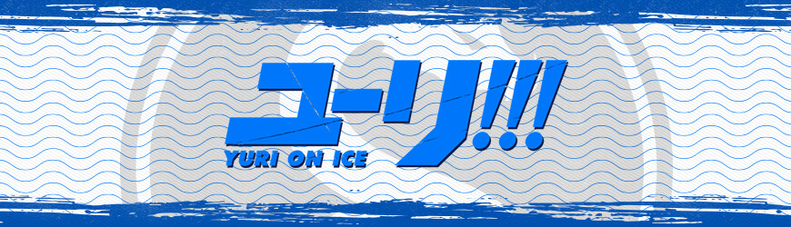
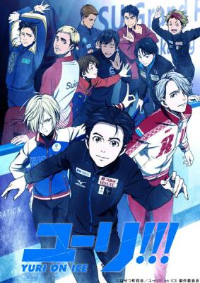

Yuri on ice

Fiche descriptive:
Nom: Yuri on ice
Type: b.l.
Studio d'annimation: MAPPA
Disponible gratuitement sur Crunchyroll
Nombre d'épisodes: 12
Résumé:
L'épisode 1 débute donc sur une première séquence très proche du film d'animation sus-cité,
avec ses couleurs sombres et bleues.
Puis, c'est un univers pétillant que nous découvrons avec notre héros, Yuri,
jovial et ultra expressif qui nous présente sa vie et son environnement.
Il nous parlera du monde de la compétition sportive à haut niveau,
de ses états d'esprit se questionnant sur son avenir dans le patinage artistique et de tous ses proches plus fous-fous les uns que les autres!
Ce début de série égaye, émeut et émerveille grâce à ses démonstrations sportives.
On s'attache aux personnages dès leur première apparition,
enthousiastes de savoir comment ils évolueront. La qualité de l'animation est de toute beauté,
du moins pour le premier épisode, on se croirait à peu de choses près dans un film d'animation.
Par la suite, on remarque certaines scènes un peu moins soignées,
certaines animations semblent réutilisées plusieurs fois.
Malgré ça, Yuri!!! on ice reste un régal à regarder.
Avis:
Voilà donc un anime de sport sensationnel,
je suis très heureuse de voir enfin une série qui ne parle pas de lycéens nous faisant croire qu'ils jouent leur vie sur un match amical,
mais bien de vrais sportifs accomplis qui luttent pour le podium mondial.
Chaque épisode apporte sa dose de bonne humeur,
même lorsque les personnages traversent des passes difficiles.
